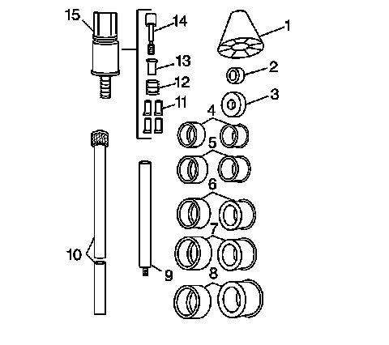
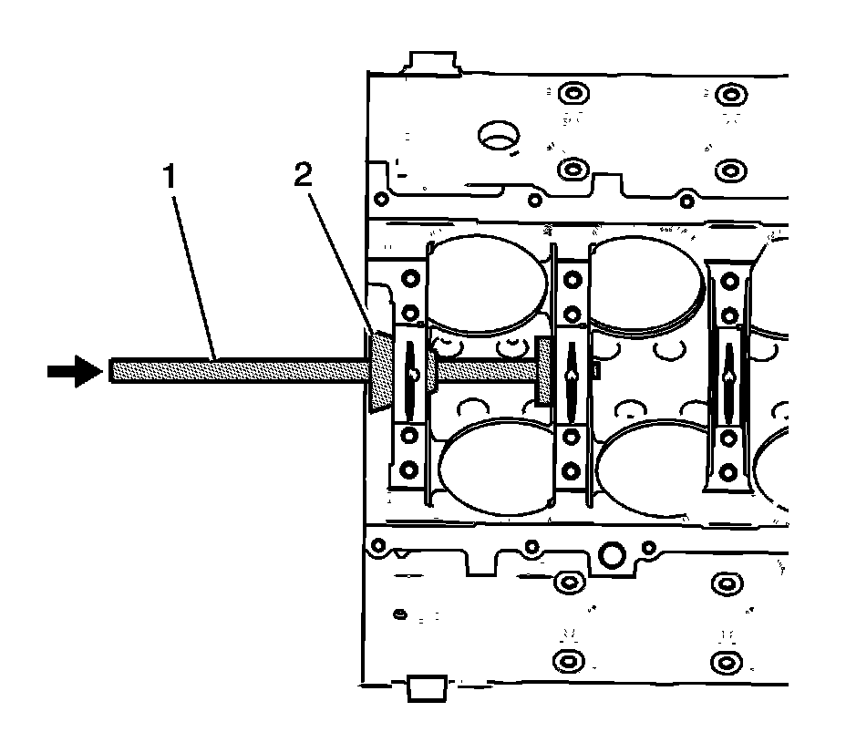

40. Camshaft Bearing Removal
Camshaft Bearing Removal
Tools Required
J 33049 Camshaft Bearing Service Set
Important: A loose camshaft bearing may be caused by an enlarged, out of round, or damaged engine block bearing bore.
1. Prior to bearing removal, inspect the camshaft bearings for loose fit in the engine block bearing bores. Refer to Camshaft and Bearings Cleaning and Inspection.
2. Repair or replace the components, as required.

3. Select the expanding driver (4-8) and washer (2 or 3) from the J 33049.
4. Assemble the tool.
5. Insert the tool through the front of the engine block and into the bearing.
6. Tighten the expander assembly (15) nut until snug.
7. Push the guide cone (1) into the front camshaft bearing in order to align the tool.

8. Drive the bearing from the block bore.
Important: In order to remove the front camshaft bearing, operate the tool from the rear of the block, using the guide cone in the rear camshaft bearing bore.
9. Repeat the above procedures in order to remove the remaining bearings.
Tool Usage Information
Bearing, Expander, and Expander Driver Information
^ The tool consists of a guide cone (1), driving washers (2 or 3), expander bearing drivers (4-8), driver bars (9 or 10), expander jaws (11), expander sleeve (12), expander cone (13), expander shaft (14), and expander assembly (15).
^ Expander bearing driver number 1 inside diameter is 28.575-37.465 mm (1.125-1.475 in) and is used with the expander assembly and the small washer.
^ Expander bearing driver number 2 inside diameter is 37.465-43.18 mm (1.475-1.7 in) and is used with number 1 expanding driver and the small washer.
^ Expander bearing driver number 3 inside diameter is 43.18-48.895 mm (1.7-1.925 in) and is used with number 2 expanding driver and the large washer.
^ Expander bearing driver number 4 inside diameter is 48.895-54.61 mm (1.925-2.15 in) and is used with number 3 expanding driver and the large washer.
^ Expander bearing driver number 5 inside diameter is 54.61-60.325 mm (2.150-2.375 in) and is used with number 4 expanding driver and the large washer.
^ Expander bearing driver number 6 inside diameter is 60.325-68.326 mm (2.375-2.69 in) and is used with number 5 expanding driver and the large washer.
Tool Assembly and Operation
1. Select the proper expanding driver and washer from the expanding driver and washer information.
Important: To install or remove the expanding driver, always push on or pull from the ends.
Pressure on the outside diameter may cause a bind against the rubber expanding sleeve.
2. Place the expanding driver onto the expander assembly.
3. Ensure the separation lines between the segments of the expanding driver align with the separation lines of the expander assembly.
4. With the small end of the cone facing the driver assembly, place the guide cone over the driving bar.
5. Place the driving washer over the threaded portion of the expander assembly.
6. Screw the expander assembly, with driving washer, onto the driving bar.
For removal of the inner bearings, it may be necessary to install the driver bar extension.

7. Insert the tool into an inner camshaft bearing and tighten until snug.
Operate the tool from the front or rear of the engine block.
On some engine blocks, the nut on the expander assembly is inaccessible, except from either end. In this case, you must use a socket and extension to enlarge and reduce the expander assembly.
8. Slide the nylon cone (2) into the front or rear camshaft bearing. This will properly align the tool.
9. Drive the bearing out of or into the engine block.
10. Repeat the procedure for the additional inner bearings.
11. For the 2 end bearings, front and rear, remove the nylon cone and driver bar extension.
12. Drive the bearings out of or into the engine block.